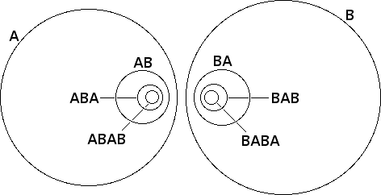

| Call the circles A and B. |
| Call AB the inverse in A of B, and BA the inverse in B of A. |
| Inverting AB in A gives AAB = B, by property (v), so we do not construct combinations involing AA or BB. Said equivalently, we replace A2n+1 with A, and eliminate A2n. Combinations of this kind are called reduced words. |
|  |
| The discs bounded by these circles fall into two families: |
| A contains AB, contains ABA, contains ABAB, and so on. |
| B contains BA, contains BAB, contains BABA, ans so on. |
| Though proving this is difficult, the diameters of these circles goes to 0 (so long as A and B do not intersect). Consequently, the limit set is just two points. |
| If A and B are tangent, the two points of the limit set coalesce into one point. Click the picture to return to the original picture. |
Return to Two Circle Limit Sets.